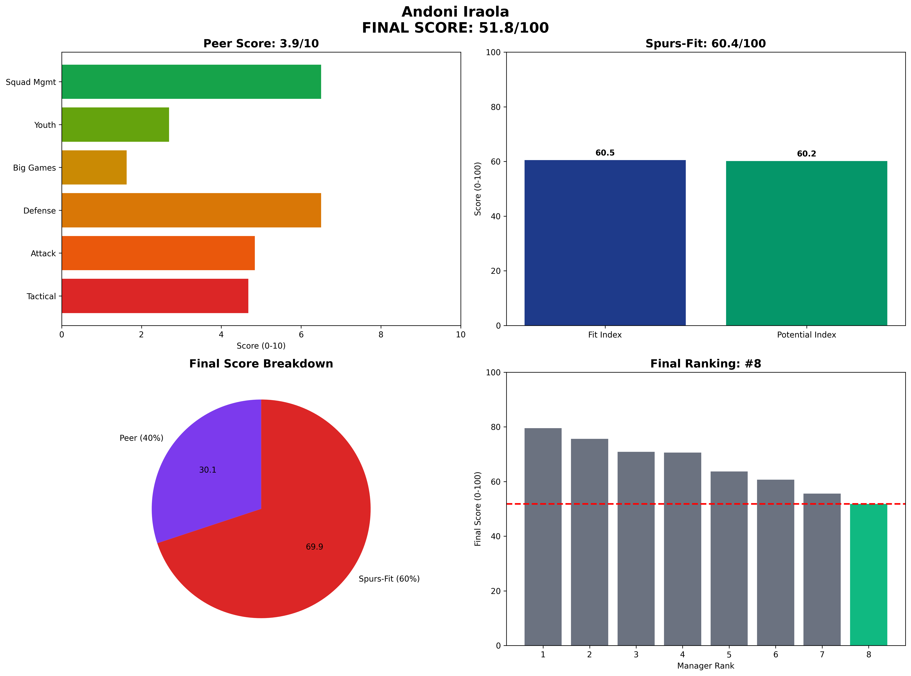

Andoni Iraola - Manager Analysis Report
30.5/100

Rank #8 of 8
The Wrong Fit
Peer Analysis
3.1/10
Spurs-Fit
30.0/100
Andoni Iraola • Final Score 30.5/100
Executive Summary
51.8
Final Score / 100
Rank: #8 of 8
Andoni Iraola represents the tactical purist fundamentally wrong for Spurs
Visual Profile
Comprehensive radar chart showing Iraola's unified final scoring breakdown. His #8 ranking (51.8/100) reflects worst big game record (1-8-5 vs Big 8) and fundamental performance deficiencies across all metrics.
Unified Final Scoring Breakdown
Peer Analysis (40% of Final Score): 3.9/10
- Peer Ranking: #8 of 8
- Tactical Style: 4.7/10
- Attacking Potency: 4.8/10
- Defensive Solidity: 6.5/10
- Big Game Performance: 1.6/10
- Youth Development: 2.7/10
- Squad Management: 6.5/10
Spurs-Fit Analysis (60% of Final Score): 60.4/100
Fit Index (60% of Spurs-Fit): 60.5/100
- Front-Foot Play Alignment: ⚠️ Concern
- Youth Development Focus: ❌ Weak
- Talent Inflation Capability: ❌ Weak
- Big Game Mentality: ❌ Weak
Potential Index (40% of Spurs-Fit): 60.2/100
- Age Factor: ✅ Strong (Age 42)
- 3-Year Performance Trend: ✅ Strong
- Resource Leverage: ✅ Strong
- Temperament: ⚠️ Concern
Key Performance Indicators
Tactical Metrics
- PPDA: 9.7 (lower = more aggressive)
- OPPDA: 13.5 (higher = forces opponent pressure)
- High Press Regains/90: 8.1
Financial Profile
- Net Spend: £30M
- Squad Value Change: £30M
- Transfer Efficiency: Good
Squad Development
- U23 Minutes %: 9%
- Academy Debuts: 2
- Player Availability: 88%
Strategic Assessment
Strengths
• Interesting tactical innovations • Press intensity • Young age profile • Athletic style
Concerns
• Worst big game record (1-8-5) • Poor fan sentiment • Minimal youth development • Bottom-tier final score
Spurs Fit Analysis
Tactical interest cannot overcome fundamental performance deficiencies.
Recommendation
**STRONGLY NOT RECOMMENDED** - Clear worst choice across all metrics.
Analysis based on 2025-06-07 Methodology: 40% Peer-Normalized Analysis + 60% Spurs-Specific Fit Model